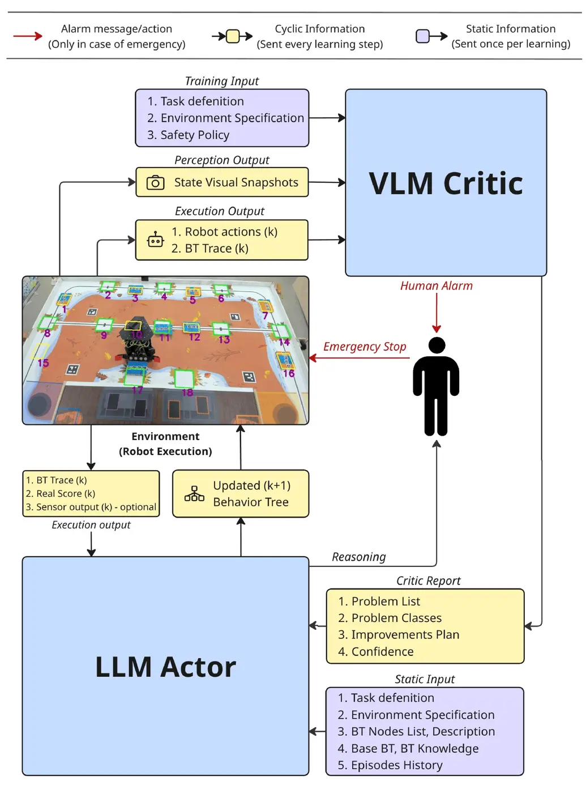
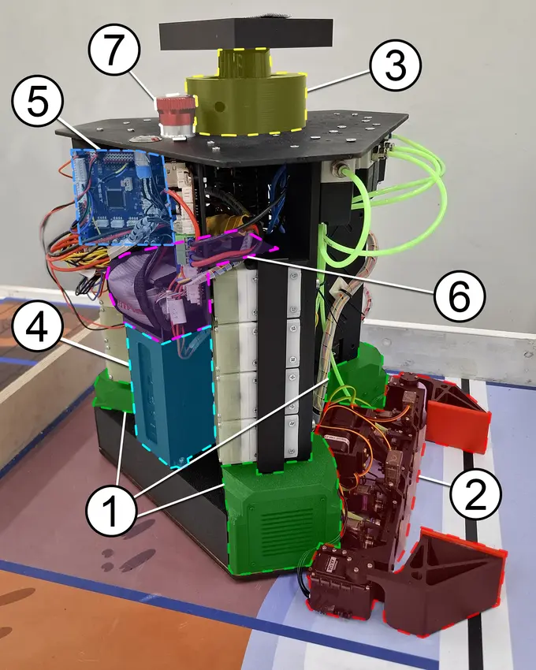
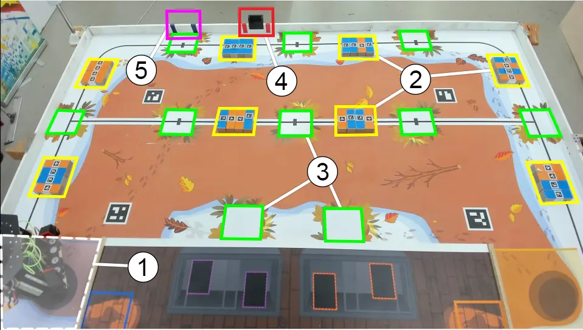
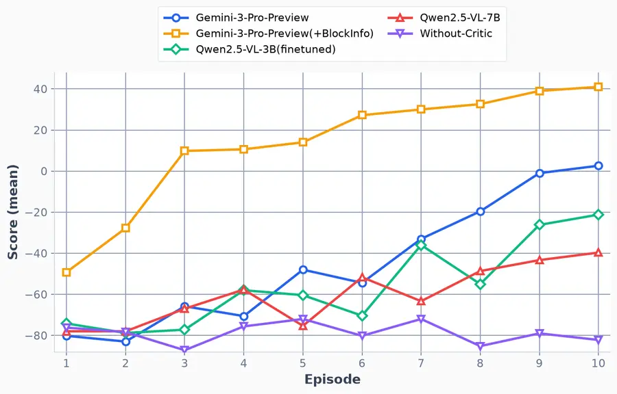
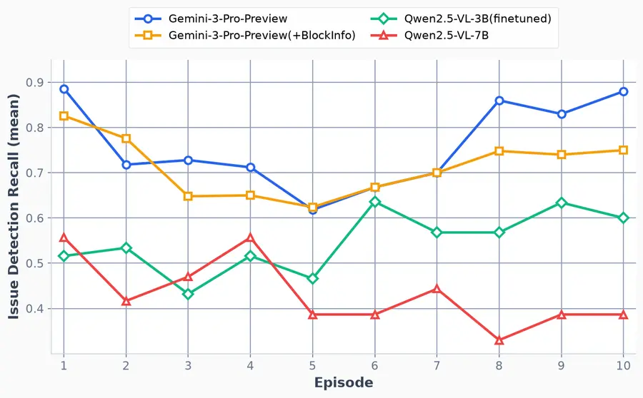
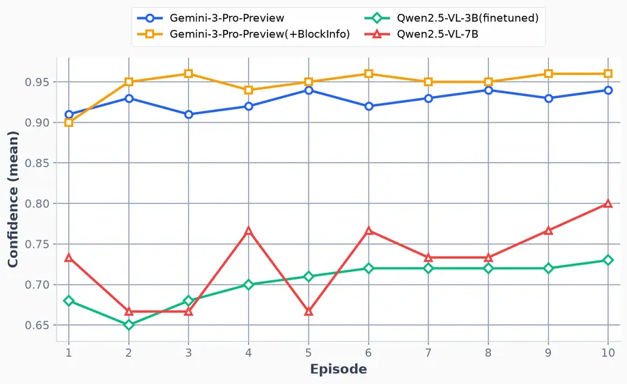
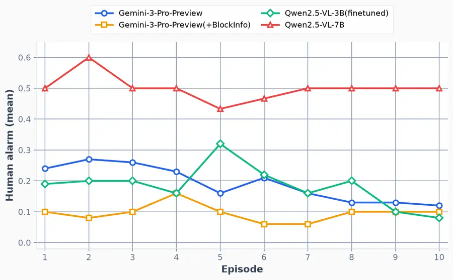
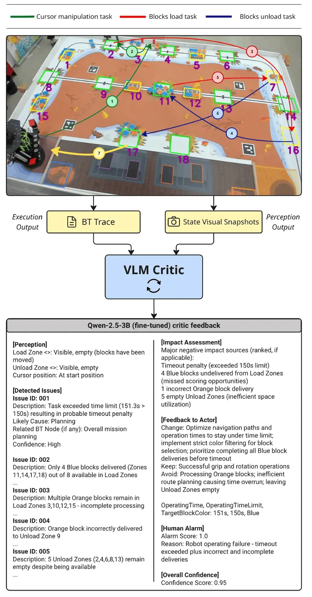
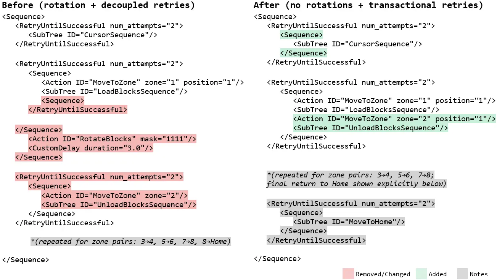

Behavior Tree
Stores the current task strategy as explicit nodes, parameters, retries, sequences, and reusable subtrees. This is the only component updated during deployment.
Skolkovo Institute of Science and Technology, Moscow, Russia
* Equal contribution
VersualRL turns grounded visual critique into transparent Behavior Tree updates on a physical mobile robot.
Overview
VersualRL closes the gap between a symbolic plan and its physical execution. A vision-language critic observes the robot, identifies what failed and why, and gives structured feedback to an LLM actor that edits the executable Behavior Tree.
Both foundation models remain frozen during deployment. Learning happens through discrete, human-readable changes to the policy—without online gradient optimization, a simulator, or an opaque neural controller. A human-verified episode score anchors each update in the true task outcome.
Under the hood
The foundation models do not change during robot operation. The evolving object is the executable task policy itself: a Behavior Tree assembled from expert-designed nodes and rewritten between episodes.
Stores the current task strategy as explicit nodes, parameters, retries, sequences, and reusable subtrees. This is the only component updated during deployment.
Receives the current BT, task and environment definitions, the node library, authoring rules, critic feedback, score history, and proposes a syntactically valid patch.
Combines field images with BT traces. It produces evidence-grounded critique, an issue-severity alarm score, and an explicit confidence estimate.
Confirms the physical outcome, computes the rule-based episode score, and intervenes only when the critic flags a severe or uncertain situation.
The actor combines the current policy with the final critic report F, human-verified score R, and prior episode history H.
Method

Run the current Behavior Tree on the physical robot.
Ground failures in images, traces, severity, and confidence.
Patch the symbolic policy and carry the lesson into the next episode.
Critic protocol
Before motion, the critic inspects the starting image for setup errors, misplaced objects, or unsafe conditions.
After each executed subtree, it receives a new image and the corresponding BT trace, while accumulating episodic memory.
At termination, it analyzes the final scene, complete trace, and prior observations to produce the report used for the next BT update.
Physical setup


Evaluation protocol
Each configuration was evaluated on five field layouts with varying block orientations. The policy then evolved through ten sequential episodes per layout, yielding 50 robot episodes per setting.
| Configuration | Visual critic | Additional signal | Purpose |
|---|---|---|---|
| No critic | — | BT trace + score R | Tests whether a scalar outcome alone can guide refinement. |
| Qwen2.5-VL-7B | Untuned | Images + traces | Measures generic model scale without domain adaptation. |
| Qwen2.5-VL-3B | LoRA fine-tuned | Images + traces | Tests task-aligned critique with a smaller open model. |
| Gemini-3-Pro-Preview | Untuned MLLM | Images + traces | Evaluates stronger general multimodal and spatial reasoning. |
| Gemini + BlockInfo | Untuned MLLM | Color/orientation state | Separates perceptual ambiguity from symbolic policy reasoning. |
Reproducibility note: the Gemini preview endpoint used during data collection was discontinued on March 9, 2026; the reported curves correspond to that historical model version.
Open critic adaptation
The critic was trained on annotated execution evidence rather than generic captions. Each example paired a field image and BT trace with a target critique following the paper’s severity rubric.
Ground-truth outcome
Results
Across five field layouts and ten sequential episodes, structured visual feedback produces faster and more stable policy improvement than the scalar score alone.




Inside one update


What changed in the executable policy
RotateBlocks(mask=1111) to avoid time overhead and accidental mis-rotations.CursorSequence inside a Sequence under RetryUntilSuccessful.Limitations and next steps
Snapshot-based critique can miss latent faults whose consequences appear several BT steps after the original mistake.
An insufficiently grounded critic can generate the wrong causal hypothesis. Conservative actor updates improve safety but may sacrifice optimality.
The study uses one mobile manipulation platform, one warehouse-style task, and a fixed expert-designed node library.
Next: longer video context, trace-aware root-cause attribution, unseen layouts, richer manipulation tasks, new robot embodiments, and fully open-source critic configurations.
Takeaway
Task-level robot learning can remain transparent: observe the real execution, explain the failure, and update the symbolic strategy.
VersualRL shows that closed-loop adaptation on physical hardware does not require end-to-end differentiable policy learning. Its current limits—snapshot-based temporal context, critic grounding, and a fixed node library—point directly toward longer video reasoning, trace-aware root-cause analysis, and broader robot embodiments.
Citation
@article{plotnikov2026versualrl,
title = {VersualRL: Closed-Loop Verbal Reinforcement Learning with
Visual Execution Feedback for Task-Level Robot Planning},
author = {Plotnikov, Dmitrii and Kolomiets, Iaroslav and Maliukov, Dmitrii
and Kosenkov, Dmitrij and Zinniatullina, Daniia and Trandofilov, Artem
and Gazaryan, Georgii and Bogatikov, Kirill and Kozlov, Timofei
and Konenkov, Mikhail and Cabrera, Miguel Altamirano
and Tsetserukou, Dzmitry},
year = {2026}
}This work was financially supported by RSF grant No. 24-41-02039. The authors thank Igor Duchinskii, Nikita Kuzmin, Mariya Lezina, and Georgii Demianchuk for assistance with data collection.